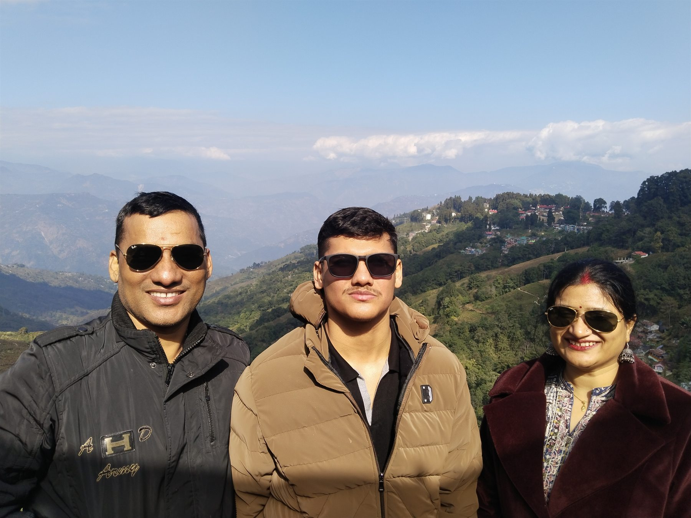
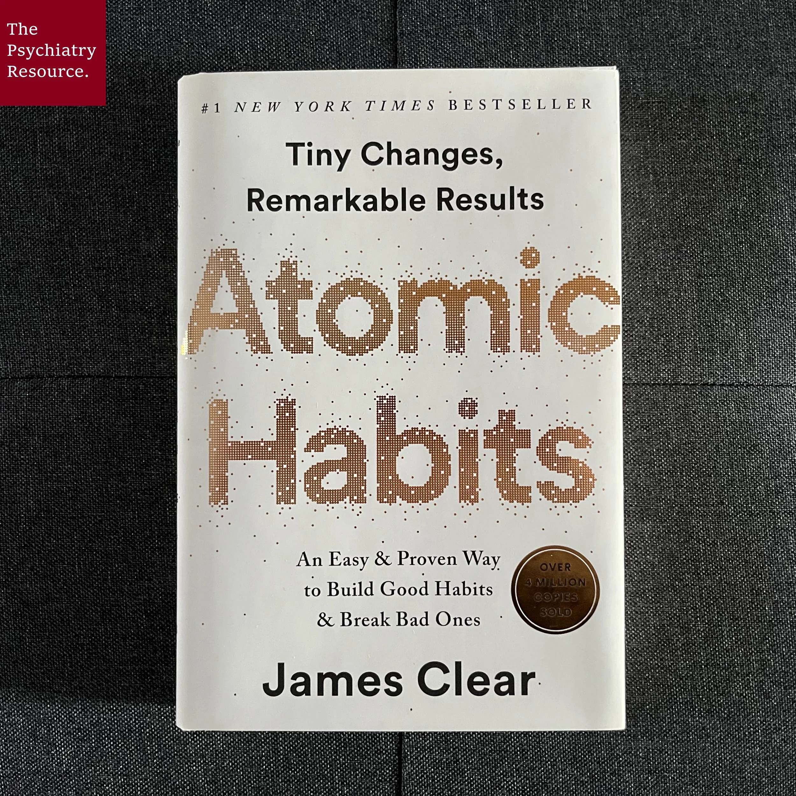
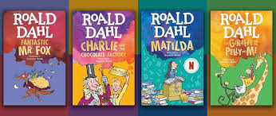
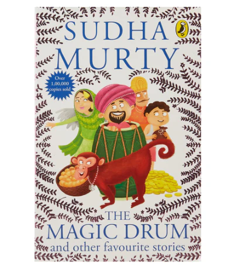
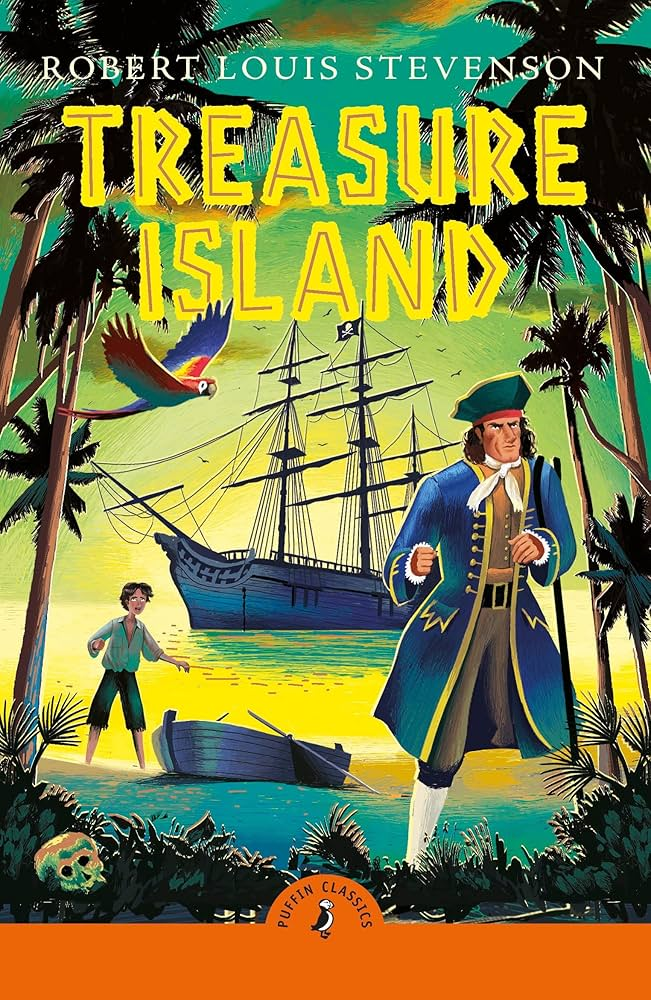
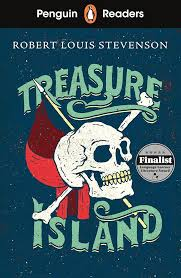

Kolkata-based student
Young, ambitious, and always looking for the next skill to unlock.
17 · Kolkata · Builder mode on
I am a passionate coder, sports lover, creator, and learner from Kolkata, building ideas, chasing better execution, and using AI like a launchpad for sharper work.

Creative, confident, and built as a static site for GitHub Pages.
I like turning ideas into real things, learning in public, and keeping my momentum high.
Young, ambitious, and always looking for the next skill to unlock.
I am 17 years old and live in Kolkata. Coding is one of the biggest parts of my life because it lets me build, experiment, and solve problems in a way that feels creative.
I have already created many builds in the past, and every new experiment teaches me something about discipline, taste, and execution. I use AI tools like ChatGPT, Claude, Grok, and Codex to stay productive, think faster, and turn rough ideas into polished results.
Creative interests, athletic discipline, and builder habits, all feeding the same direction.
Building clean, useful experiences and learning by making real things.
Turning ideas into finished demos with design, logic, and polish.
Breaking complex challenges into smaller moves and staying consistent.
Using modern AI tools to learn faster, plan better, and create more.
Football, basketball, and badminton keep the competitive side sharp.
Music gives a different kind of focus: rhythm, patience, and expression.
Making videos, sharing experiments, and building confidence on camera.
Staying open, upgrading skills, and keeping curiosity alive.
Sports are not just hobbies for me. They built my discipline, reflexes, patience, and hunger to improve. Football and basketball bring pace; badminton brings precision.
Guitar gives the portfolio a softer edge: practice, expression, and a channel ready to grow.
Channel link is live now; featured clips can be embedded here once video IDs are added.
A premium tile for your first highlighted guitar video.
For a short clip, riff, lesson, or behind-the-scenes moment.
Content creation began early for me. The section is now clean and focused on the channel story, with room to bring featured videos back later.
The channel began early and keeps growing with curiosity, experimentation, and confidence. Featured video tiles can return later when you choose the exact clips.
Books that shaped discipline, imagination, warmth, and the adventure side of learning.

A practical reminder that big change usually starts with tiny systems repeated honestly.

Playful, strange, and sharp, his stories make imagination feel fearless.

Simple stories with kindness, humility, and life lessons that stay quietly useful.

A classic adventure that still feels fast, risky, and full of old-school courage.
Each place gets an image, a memory, and a polished card that can grow over time.

Blue water, calm beaches, and that rare feeling of the world slowing down.
Misty hills, tea-garden air, and a mountain mood that feels cinematic.

A wide coastline with big-city energy and a horizon that opens the mind.
Building my future one practice session, match, book, upload, and idea at a time.
Find me onlineInstagram page for updates, moments, and creative work.
Open Instagram